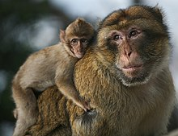
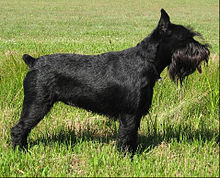
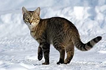
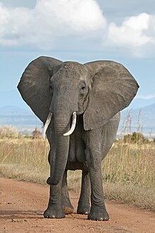
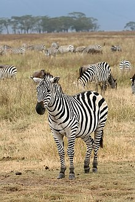
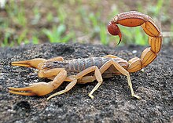

Monkey is a common name that may refer to most mammals of the infraorder Simiiformes, also known as simians. Traditionally, all animals in the group now known as simians are counted as monkeys except the apes. Thus monkeys, in that sense, constitute an incomplete paraphyletic grouping; however, in the broader sense based on cladistics, apes (Hominoidea) are also included, making the terms monkeys and simians synonyms in regard to their scope. In 1812, Étienne Geoffroy grouped the apes and the Cercopithecidae group of monkeys together and established the name Catarrhini, "Old World monkeys" ("singes de l'Ancien Monde" in French).[3][4][5] The extant sister of the Catarrhini in the monkey ("singes") group is the Platyrrhini (New World monkeys).[3] Some nine million years before the divergence between the Cercopithecidae and the apes,[6] the Platyrrhini emerged within "monkeys" by migration to South America from Afro-Arabia (the Old World),[citation needed][7][8] likely by ocean.[9][10][better source needed] Apes are thus deep in the tree of extant and extinct monkeys, and any of the apes is distinctly closer related to the Cercopithecidae than the Platyrrhini are.
_Photograph_By_Shantanu_Kuveskar.webp)
According to the Online Etymology Dictionary, the word "monkey" may originate in a German version of the Reynard the Fox fable, published c. 1580. In this version of the fable, a character named Moneke is the son of Martin the Ape.[29] In English, no clear distinction was originally made between "ape" and "monkey"; thus the 1911 Encyclopædia Britannica entry for "ape" notes that it is either a synonym for "monkey" or is used to mean a tailless humanlike primate.[30] Colloquially, the terms "monkey" and "ape" are widely used interchangeably.[31][32] Also, a few monkey species have the word "ape" in their common name, such as the Barbary ape. Later in the first half of the 20th century, the idea developed that there were trends in primate evolution and that the living members of the order could be arranged in a series, leading through "monkeys" and "apes" to humans.[33] Monkeys thus constituted a "grade" on the path to humans and were distinguished from "apes". Scientific classifications are now more often based on monophyletic groups, that is groups consisting of all the descendants of a common ancestor. The New World monkeys and the Old World monkeys are each monophyletic groups, but their combination was not, since it excluded hominoids (apes and humans). Thus, the term "monkey" no longer referred to a recognized scientific taxon. The smallest accepted taxon which contains all the monkeys is the infraorder Simiiformes, or simians. However this also contains the hominoids, so that monkeys are, in terms of currently recognized taxa, non-hominoid simians. Colloquially and pop-culturally, the term is ambiguous and sometimes monkey includes non-human hominoids.[34] In addition, frequent arguments are made for a monophyletic usage of the word "monkey" from the perspective that usage should reflect cladistics.[21][35][36][37][38] Several science-fiction and fantasy stories have depicted non-human (fantastical or alien) antagonistic characters refer to humans as monkeys, usually in a derogatory manner, as a form of metacommentary.[39] A group of monkeys may be commonly referred to as a tribe or a troop.[40] Two separate groups of primates are referred to as "monkeys": New World monkeys (platyrrhines) from South and Central America and Old World monkeys (catarrhines in the superfamily Cercopithecoidea) from Africa and Asia. Apes (hominoids)—consisting of gibbons, orangutans, gorillas, chimpanzees and bonobos, and humans—are also catarrhines but were classically distinguished from monkeys.[41][9][42][43] Tailless monkeys may be called "apes", incorrectly according to modern usage; thus the tailless Barbary macaque is historically called the "Barbary ape".[32]
As apes have emerged in the monkey group as sister of the old world monkeys, characteristics that describe monkeys are generally shared by apes as well. Williams et al. outlined evolutionary features, including in stem groupings, contrasted against the other primates such as the tarsiers and the lemuriformes.[44] Monkeys range in size from the pygmy marmoset, which can be as small as 117 mm (4+5⁄8 in) with a 172 mm (6+3⁄4 in) tail and just over 100 g (3+1⁄2 oz) in weight,[45] to the male mandrill, almost 1 m (3 ft 3 in) long and weighing up to 36 kg (79 lb).[46] Some are arboreal (living in trees) while others live on the savanna; diets differ among the various species but may contain any of the following: fruit, leaves, seeds, nuts, flowers, eggs and small animals (including insects and spiders).[47] Some characteristics are shared among the groups; most New World monkeys have long tails, with those in the Atelidae family being prehensile, while Old World monkeys have non-prehensile tails or no visible tail at all.[32] Old World monkeys have trichromatic color vision like that of humans, while New World monkeys may be trichromatic, dichromatic, or—as in the owl monkeys and greater galagos—monochromatic. Although both the New and Old World monkeys, like the apes, have forward-facing eyes, the faces of Old World and New World monkeys look very different, though again, each group shares some features such as the types of noses, cheeks and rumps.[47]
The dog (Canis familiaris or Canis lupus familiaris) is a domesticated descendant of the wolf. Also called the domestic dog, it was domesticated from an extinct population of wolves during the Late Pleistocene, over 14,000 years ago by hunter-gatherers, prior to the development of agriculture. The dog was the first species to be domesticated by humans. Experts estimate that due to their long association with humans, dogs have expanded to a large number of domestic individuals and gained the ability to thrive on a starch-rich diet that would be inadequate for other canids.[4] The dog has been selectively bred over millennia for various behaviors, sensory capabilities, and physical attributes.[5] Dog breeds vary widely in shape, size, and color. They have identical skeletal structures (with the exception of the tail and skull), powerful jaws that house around 42 teeth, and well-developed senses of smell, hearing and sight. They perform many roles for humans, such as hunting, herding, pulling loads, protection, assisting police and the military, companionship, therapy, and aiding disabled people. Communication in dogs include eye gaze, facial expression, vocalization, body posture (including movements of bodies and limbs), and gustatory communication (scents, pheromones, and taste). They mark their territories by urinating on them, which is more likely when entering a new environment. Over the millennia, dogs became uniquely adapted to human behavior, and the human–canine bond has been a topic of frequent study. This influence on human society has given them the sobriquet of "man's best friend". The dog is the most popular pet in the United States, present in 34–40% of households. In developed countries, around 20% of dogs are kept as pets, while 75% of the population in developing countries largely consists of feral and community dogs. As of 2020, the global dog population was estimated at 700 million to 1 billion.
Dogs are domesticated members of the family Canidae. They are classified as a subspecies of Canis lupus, along with wolves and dingoes.[7][8] Dogs were domesticated from wolves over 14,000 years ago by hunter-gatherers, before the development of agriculture.[9][10] The dingo and the related New Guinea singing dog resulted from the geographic isolation and feralization of dogs in Oceania over 8,000 years ago.[11][12] Dogs, wolves, and dingoes have sometimes been classified as separate species.[8] In 1758, the Swedish botanist and zoologist Carl Linnaeus assigned the genus name Canis (which is the Latin word for "dog")[13] to the domestic dog, the wolf, and the golden jackal in his book, Systema Naturae. He classified the domestic dog as Canis familiaris and, on the next page, classified the grey wolf as Canis lupus.[2] Linnaeus considered the dog to be a separate species from the wolf because of its upturning tail (cauda recurvata in Latin term), which is not found in any other canid.[14] The classification of dingoes is disputed and a political issue in Australia. Classifying dingoes as wild dogs simplifies reducing or controlling dingo populations that threaten livestock. Treating dingoes as a separate species allows conservation programs to protect the dingo population.[15] Dingo classification affects wildlife management policies, legislation, and societal attitudes.[16] In 2019, a workshop hosted by the IUCN/Species Survival Commission's Canid Specialist Group considered the dingo and the New Guinea singing dog to be feral Canis familiaris. Therefore, it did not assess them for the IUCN Red List of threatened species.[17]
Dogs are extremely variable in size, ranging from one of the largest breeds, the Great Dane, at 50 to 79 kg (110 to 174 lb) and 71 to 81 cm (28 to 32 in), to one of the smallest, the Chihuahua, at 0.5 to 3 kg (1.1 to 6.6 lb) and 13 to 20 cm (5.1 to 7.9 in).[31][32] All healthy dogs, regardless of their size and type, have an identical skeletal structure with the exception of the number of bones in the tail, although there is significant skeletal variation between dogs of different types.[33][34] The dog's skeleton is well adapted for running; the vertebrae on the neck and back have extensions for back muscles, consisting of epaxial muscles and hypaxial muscles, to connect to; the long ribs provide room for the heart and lungs; and the shoulders are unattached to the skeleton, allowing for flexibility.[33][34][35] Compared to the dog's wolf-like ancestors, selective breeding since domestication has seen the dog's skeleton larger in size for larger types such as mastiffs and miniaturised for smaller types such as terriers; dwarfism has been selectively used for some types where short legs are advantageous, such as dachshunds and corgis.[34] Most dogs naturally have 26 vertebrae in their tails, but some with naturally short tails have as few as three.[33] The dog's skull has identical components regardless of breed type, but there is significant divergence in terms of skull shape between types.[34][36] The three basic skull shapes are the elongated dolichocephalic type as seen in sighthounds, the intermediate mesocephalic or mesaticephalic type, and the very short and broad brachycephalic type exemplified by mastiff type skulls.[34][36] The jaw contains around 42 teeth, and it has evolved for the consumption of flesh. Dogs use their carnassial teeth to cut food into bite-sized chunks, more especially meat.[37]
The cat (Felis catus), also referred to as domestic cat or house cat, is a small domesticated carnivorous mammal. It is the only domesticated species of the family Felidae. Advances in archaeology and genetics have shown that the domestication of the cat occurred in the Near East around 7500 BC. It is commonly kept as a house pet and farm cat, but also ranges freely as a feral cat avoiding human contact. Valued by humans for companionship and its ability to kill vermin, the cat's retractable claws are adapted to killing small prey like mice and rats. It has a strong, flexible body, quick reflexes, and sharp teeth, and its night vision and sense of smell are well developed. It is a social species, but a solitary hunter and a crepuscular predator. Cat communication includes vocalizations—including meowing, purring, trilling, hissing, growling, and grunting–as well as body language. It can hear sounds too faint or too high in frequency for human ears, such as those made by small mammals. It secretes and perceives pheromones. Female domestic cats can have kittens from spring to late autumn in temperate zones and throughout the year in equatorial regions, with litter sizes often ranging from two to five kittens. Domestic cats are bred and shown at events as registered pedigreed cats, a hobby known as cat fancy. Animal population control of cats may be achieved by spaying and neutering, but their proliferation and the abandonment of pets has resulted in large numbers of feral cats worldwide, contributing to the extinction of bird, mammal, and reptile species. As of 2017, the domestic cat was the second most popular pet in the United States, with 95.6 million cats owned and around 42 million households owning at least one cat. In the United Kingdom, 26% of adults have a cat, with an estimated population of 10.9 million pet cats as of 2020. As of 2021, there were an estimated 220 million owned and 480 million stray cats in the world.
Elephants are the largest living land animals. Three living species are currently recognised: the African bush elephant (Loxodonta africana), the African forest elephant (L. cyclotis), and the Asian elephant (Elephas maximus). They are the only surviving members of the family Elephantidae and the order Proboscidea; extinct relatives include mammoths and mastodons. Distinctive features of elephants include a long proboscis called a trunk, tusks, large ear flaps, pillar-like legs, and tough but sensitive grey skin. The trunk is prehensile, bringing food and water to the mouth and grasping objects. Tusks, which are derived from the incisor teeth, serve both as weapons and as tools for moving objects and digging. The large ear flaps assist in maintaining a constant body temperature as well as in communication. African elephants have larger ears and concave backs, whereas Asian elephants have smaller ears and convex or level backs. Elephants are scattered throughout sub-Saharan Africa, South Asia, and Southeast Asia and are found in different habitats, including savannahs, forests, deserts, and marshes. They are herbivorous, and they stay near water when it is accessible. They are considered to be keystone species, due to their impact on their environments. Elephants have a fission–fusion society, in which multiple family groups come together to socialise. Females (cows) tend to live in family groups, which can consist of one female with her calves or several related females with offspring. The leader of a female group, usually the oldest cow, is known as the matriarch. Males (bulls) leave their family groups when they reach puberty and may live alone or with other males. Adult bulls mostly interact with family groups when looking for a mate. They enter a state of increased testosterone and aggression known as musth, which helps them gain dominance over other males as well as reproductive success. Calves are the centre of attention in their family groups and rely on their mothers for as long as three years. Elephants can live up to 70 years in the wild. They communicate by touch, sight, smell, and sound; elephants use infrasound and seismic communication over long distances. Elephant intelligence has been compared with that of primates and cetaceans. They appear to have self-awareness, and possibly show concern for dying and dead individuals of their kind.
Zebras (US: /ˈziːbrəz/, UK: /ˈzɛbrəz, ˈziː-/)[2] (subgenus Hippotigris) are African equines with distinctive black-and-white striped coats. There are three living species: Grévy's zebra (Equus grevyi), the plains zebra (E. quagga), and the mountain zebra (E. zebra). Zebras share the genus Equus with horses and asses, the three groups being the only living members of the family Equidae. Zebra stripes come in different patterns, unique to each individual. Several theories have been proposed for the function of these patterns, with most evidence supporting them as a deterrent for biting flies. Zebras inhabit eastern and southern Africa and can be found in a variety of habitats such as savannahs, grasslands, woodlands, shrublands, and mountainous areas. Zebras are primarily grazers and can subsist on lower-quality vegetation. They are preyed on mainly by lions, and typically flee when threatened but also bite and kick. Zebra species differ in social behaviour, with plains and mountain zebra living in stable harems consisting of an adult male or stallion, several adult females or mares, and their young or foals; while Grévy's zebra live alone or in loosely associated herds. In harem-holding species, adult females mate only with their harem stallion, while male Grévy's zebras establish territories which attract females and the species is promiscuous. Zebras communicate with various vocalisations, body postures and facial expressions. Social grooming strengthens social bonds in plains and mountain zebras. Zebras' dazzling stripes make them among the most recognisable mammals. They have been featured in art and stories in Africa and beyond. Historically, they have been highly sought by exotic animal collectors, but unlike horses and donkeys, zebras have never been completely domesticated. The International Union for Conservation of Nature (IUCN) lists Grévy's zebra as endangered, the mountain zebra as vulnerable and the plains zebra as near-threatened. The quagga (E. quagga quagga), a type of plains zebra, was driven to extinction in the 19th century. Nevertheless, zebras can be found in numerous protected areas.
Scorpions are predatory arachnids of the order Scorpiones. They have eight legs and are easily recognized by a pair of grasping pincers and a narrow, segmented tail, often carried in a characteristic forward curve over the back and always ending with a stinger. The evolutionary history of scorpions goes back 435 million years. They mainly live in deserts but have adapted to a wide range of environmental conditions, and can be found on all continents except Antarctica. There are over 2,500 described species, with 22 extant (living) families recognized to date. Their taxonomy is being revised to account for 21st-century genomic studies. Scorpions primarily prey on insects and other invertebrates, but some species hunt vertebrates. They use their pincers to restrain and kill prey, or to prevent their own predation. The venomous sting is used for offense and defense. During courtship, the male and female grasp each other's pincers and dance while he tries to move her onto his sperm packet. All known species give live birth and the female cares for the young as their exoskeletons harden, transporting them on her back. The exoskeleton contains fluorescent chemicals and glows under ultraviolet light. The vast majority of species do not seriously threaten humans, and healthy adults usually do not need medical treatment after a sting. About 25 species (fewer than one percent) have venom capable of killing a human, which happens frequently in the parts of the world where they live, primarily where access to medical treatment is unlikely. Scorpions appear in art, folklore, mythology, and commercial brands. Scorpion motifs are woven into kilim carpets for protection from their sting. Scorpius is the name of a constellation; the corresponding astrological sign is Scorpio. A classical myth about Scorpius tells how the giant scorpion and its enemy Orion became constellations on opposite sides of the sky.
